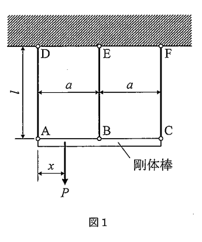

問題概要
2017年度の材料力学入試では、大問【1】で3本のワイヤで吊り下げられた剛体棒の問題（不静定構造の変形解析）、大問【2】で一端固定・他端支持はりの曲げ問題（不静定はりの境界条件）、大問【3】で両端固定丸棒のねじり問題（不静定ねじりの反力分布）が出題されました。全て不静定問題で構成された難易度の高い年度です。
問題PDFをダウンロード (2017年度) 解答PDFをダウンロード (2017年度)大問【1】
3本のワイヤで吊り下げられた剛体棒に集中荷重が作用する不静定構造について、各ワイヤの張力、たるまない条件、剛体棒の傾き角を解析する。
与えられた条件:
- 剛体棒：長さ2a、A、B、C点で3本のワイヤで吊り下げ
- ワイヤ：全て同じ材質・寸法（長さl、断面積A、ヤング率E）
- 荷重：距離xの位置に集中荷重P（垂直下向き）
- 剛体仮定：棒は変形しない

図1：問題1の説明図
考え方のヒント
剛体棒では3点の変位が一直線上に保たれるため、変形の幾何学的関係「2δB = δA + δC」が成り立ちます。この条件を不静定問題の解法に活用します。
途中式と解答
(1) 各ワイヤの張力
力とモーメントの釣り合いに加えて、剛体の変形の幾何学的関係を利用します。
力の釣り合い：
$$Q_{AD} + Q_{BE} + Q_{CF} = P$$
モーメントの釣り合い（A点まわり）：
$$Q_{BE} \cdot a + Q_{CF} \cdot 2a = P \cdot x$$
変形の適合条件：
剛体の幾何学的関係から：
$$2\delta_B = \delta_A + \delta_C$$
$$2Q_{BE} = Q_{AD} + Q_{CF}$$
解答：
$$Q_{AD} = \frac{P}{6a}(5a - 3x)$$
$$Q_{BE} = \frac{P}{3}$$
$$Q_{CF} = \frac{P}{6a}(3x - a)$$
(2) すべてのワイヤがたるまないxの範囲
全てのワイヤの張力が正の値（QAD ≥ 0、QBE ≥ 0、QCF ≥ 0）となる条件を求めます。
条件の設定：
Q_{AD} = \frac{P}{6a}(5a - 3x) \geq 0 \Rightarrow x \leq \frac{5a}{3}
Q_{BE} = \frac{P}{3} \geq 0 \quad \text{(常に満足)}
Q_{CF} = \frac{P}{6a}(3x - a) \geq 0 \Rightarrow x \geq \frac{a}{3}
解答：
$$\frac{a}{3} \leq x \leq \frac{5a}{3}$$
(3) 剛体棒の傾き角（x = a/2の場合）
x = a/2のときの各ワイヤの張力から変位を求め、傾き角を計算します。
答え: 上記の各計算結果による
x = a/2での張力：
Q_{AD} = \frac{P}{6a}(5a - \frac{3a}{2}) = \frac{7P}{12}
Q_{CF} = \frac{P}{6a}(\frac{3a}{2} - a) = \frac{P}{12}
各点の変位：
\delta_A = \frac{Q_{AD} l}{AE} = \frac{7Pl}{12AE}
\delta_C = \frac{Q_{CF} l}{AE} = \frac{Pl}{12AE}
傾き角：
$$\theta = \frac{\delta_A - \delta_C}{2a} = \frac{Pl}{4aAE} \text{ [rad]}$$
全体のポイント
- 剛体棒では変形の幾何学的関係が追加の拘束条件となる。
- 不静定問題では力の釣り合いと変形の適合条件を連立する。
- 張力の正負で構造物の安定性を評価する。
受験材料力学のチップス
- 剛体仮定では変形の幾何学的関係を正確に把握する。
- 吊り構造では張力が負になる場合の物理的意味を理解する。
- 対称性を活用して計算を簡略化する。